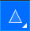

Відродження Векторних Навичок
Вітаю, юні дизайнери! Настав час згадати математичну магію BoxySVG. На відміну від пікселів, вектори дозволяють нам масштабувати ідеї до розміру хмарочосів без втрати якості. Давайте освіжимо ваші знання за допомогою цієї інтерактивної інфографіки.
1. Велика Четвірка Інструментів
Аналіз функціональності основних інструментів редактора (ліва панель інструментів)
У BoxySVG є чотири стовпи, на яких тримається весь дизайн. Розуміння їхньої спеціалізації — ключ до швидкості.
Transform (Shift+T)
Ваш "маніпулятор". Виділення, рух, розмір.
Порада: Shift тримає пропорції.
OtherShape Tools (Shift+O)
Геометрична база: квадрати, кола, зірки.
Секрет: Налаштування фігур доступно після повторного кліку на інструменті.
Splain Tool (Shift+S)
Створення складних довільних форм "точка за точкою".
Edit Tool (Shift+E)
Маніпуляція вузлами (Nodes). Справжня магія редагування.
Профіль Ефективності Інструментів
Діаграма порівнює частоту використання, складність опанування та творчий потенціал кожного інструменту.
2. Робота з Кольором
Плоскі кольори — це добре, але градієнти та прозорість додають професійного об'єму (права панель інструментів).
Fill "Заливка" (F)
Експериментуйте з градієнтами (Linear/Radial) замість суцільного кольору.
Stroke "Межа, лінія обведення" (S)
Налаштуйте товщину та стиль лінії (пунктир, крапки) для акценту.
Opacity "Прозорість" (9 прозоріше, 0 непрозоріше)

Створюйте ефекти скла, тіні та накладання шарів.
3. Геометрична Логіка
Boolean Operations: Як створювати складне з простого
Unite (Об'єднання)
1 + 1 = 1. Зливає дві фігури в одну нову форму.
Subtract (Віднімання)
Верхня фігура "відкушує" шматок від нижньої. (Місяць)
Intersect (Перетин)
Залишається тільки спільна частина об'єктів.
4. Прискорення Роботи
Розподіл команд за типом дії
Професіонали рідко використовують мишку для вибору інструментів. Ось статистика типів гарячих клавіш, які вам необхідно вивчити.
| Клавіша | Функція | Тип |
|---|---|---|
| Ctrl + Z | Відмінити дію | Контроль |
| Ctrl + G | Згрупувати | Організація |
| Ctrl + U | Розгрупувати | Організація |
| Space | Панорама (Рух) | Навігація |
| [ / ] | Рівень шару | Організація |